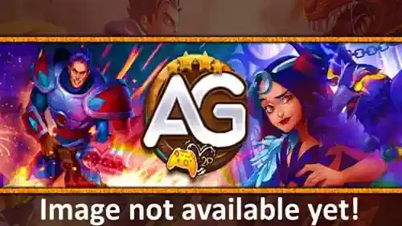
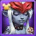
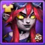
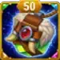
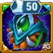

Guia do Aidan: Relíquias e Habilidades para Hero Wars Alliance
- Por: Alexandre Domingos. .
Aidan pode transformar um time à beira da derrota em um time que se recusa a cair. Neste guia de Hero Wars Alliance, explico sua cura, seus escudos e sua relíquia lendária para você entender de onde vem essa capacidade de sobrevivência e quais melhorias merecem seus recursos primeiro.
O que chama minha atenção é como suas habilidades conectam sacrifício e recuperação. O dano de habilidades aliadas cria mais alvos para a cura, Kayla ganha outra chance por meio da ressurreição, e a relíquia acrescenta proteção e crescimento de Inteligência. A verdadeira decisão é se o seu Aidan precisa de uma cura mais forte ou de resistência suficiente para continuar oferecendo essa cura.


Sumário do Aidan
- Quem é Aidan?
- Função em Combate e Avaliações
- Prós e Contras
- Comparação dos Atributos Máximos dos Talismãs
- Guia de Talismãs
- Habilidades da Relíquia Lendária e Prioridade de Evolução
- Habilidades do Reino
- Melhores Skins e Prioridade de Evolução
- Prioridade de Evolução dos Artefatos
- Prioridade de Evolução dos Glifos
- Como Combater Aidan
- Sinergias do Aidan
- Melhores Times e Times Antigos Populares
- Veredito Final do Alexandre
Quem é Aidan em Hero Wars Alliance?
Aidan é um Curandeiro da retaguarda do Caminho do Caos. Sua função é manter os aliados lutando por meio de cura, aumentos temporários de Vida e escudos de emergência, com suporte adicional de ressurreição para Kayla.

- Classe Principal: Curandeiro
- Posição: Retaguarda
- Atributo Principal: Inteligência
- Facção: Caminho do Caos
- Principal Sinergia: Kayla, aliados do Caos e times que recebem dano de habilidades aliadas.
Abraço de Fogo cura aliados que sofreram dano de habilidades aliadas desde o uso anterior. Isso faz do sacrifício aliado uma parte do seu ciclo de recuperação. Aliados do Caos recebem uma cura mais forte de Abraço de Fogo e de vários efeitos da relíquia, enquanto Kayla conta com mecânicas específicas de ressurreição.
Minha primeira prioridade é manter Aidan vivo. Fórmulas de cura fortes só ajudam enquanto ele consegue continuar usando suas habilidades, e sua própria habilidade suprema consome parte da Vida máxima dele.
Prós e Contras do Aidan - Hero Wars Alliance
✅ Prós
- Cura vários aliados após dano de habilidades aliadas.
- Cura mais forte para heróis do Caos.
- Escudos de emergência protegem aliados com pouca Vida.
- Suporte específico de ressurreição para Kayla.
- As melhorias da relíquia acrescentam proteção, cura e Inteligência acumulável.
❌ Contras
- A habilidade suprema consome 20% da própria Vida máxima.
- Dano direto limitado e nenhuma habilidade de controle de grupo listada.
- A ressurreição de Kayla exige que ela esteja no time.
- A proteção do escudo dura apenas 4 segundos.
- O crescimento de Inteligência exige dano de habilidades aliadas para atingir seu limite de ativação.
Aidan - Comparação dos Atributos Máximos dos Talismãs
Estes valores da configuração máxima são o ponto de partida para os cálculos abaixo. Eles são apresentados antes dos ganhos temporários de Vida e Inteligência durante a batalha; os ganhos de atributos da relíquia não são somados novamente.
| Atributo | Talismã 1: Talismã das Cinzas | Talismã 2: Talismã da Implacabilidade |
|---|---|---|
| 17,843 | 15,843 | |
| 3,679 | 3,679 | |
| 4,137 | 4,137 | |
Vida | 1,129,442 | 1,315,480 |
| 37,314 | 35,314 | |
| 230,375 | 203,585 | |
| 39,840 | 39,840 | |
| 43,200 | 41,200 | |
| 3,380 | 7,780 | |
| 278,122 | 279,449 |
Guia de Talismãs do Aidan - Hero Wars Alliance
Você escolhe um talismã para a batalha. Apenas os bônus do talismã equipado se aplicam; possuir os dois não combina seus atributos. Diferentemente dos bônus das skins, essa escolha muda quais benefícios Aidan leva para a luta. Avalie os três espaços de reforja pelo total combinado.
1 - Talismã das Cinzas

| Talismã | Bônus do Atributo Principal |
|---|---|
| Inteligência +2,000 |
| Espaço 1 | Espaço 2 | Espaço 3 | Bônus Total de Reforja |
|---|---|---|---|
| Ataque Mágico +6,600 | Ataque Mágico +6,600 | Ataque Mágico +6,600 | Ataque Mágico +19,800 |
O bônus de Inteligência acrescenta +6,000 de Ataque Mágico, +2,000 de Defesa Mágica e +2,000 de Ataque Físico. Junto com o bônus combinado de reforja de +19,800 Ataque Mágico, o Talismã das Cinzas fortalece Abraço de Fogo, a autocura e os efeitos da relíquia que escalam com Ataque Mágico.
2 - Talismã da Implacabilidade

| Talismã | Bônus do Atributo Principal |
|---|---|
| Dureza +4,000 |
| Espaço 1 | Espaço 2 | Espaço 3 | Bônus Total de Reforja |
|---|---|---|---|
| Vida +60,500 | Vida +60,500 | Vida +60,500 | Vida +181,500 |
O Talismã da Implacabilidade acrescenta +4,000 Dureza e um bônus combinado de reforja de +181,500 Vida. A configuração máxima fornecida chega a 1,315,480 de Vida e 7,780 de Dureza. Mais Vida máxima aumenta os valores de Ritual da Fênix baseados em Vida; a Dureza ajuda a resistir ao dano inimigo abaixo de 50% de Vida, mas não reduz o dano que Aidan causa a si mesmo.
Qual Talismã Você Deve Usar no Aidan?
Minha escolha padrão para uma cura mais forte é o Talismã das Cinzas. Seus 230,375 de Ataque Mágico fazem Abraço de Fogo oferecer 73,912.5 de cura por alvo comum, contra 65,875.5 com o Talismã da Implacabilidade. Ele também melhora a redução de dano do nível 10 e o ganho inicial de Inteligência de Preço da Sabedoria. O guia de talismãs também recomenda o primeiro talismã do Aidan.
Eu trocaria para o Talismã da Implacabilidade quando Aidan precisar de mais resistência. Ele oferece 186,038 a mais de Vida máxima e 4,400 a mais de Dureza nas configurações completas fornecidas. O aumento de Vida dos aliados de Ritual da Fênix sobe de 228,288.4 para 265,496, mas o custo de Vida do próprio Aidan também sobe de 225,888.4 para 263,096. O benefício da Dureza depende da Vida baixa e do atributo principal do atacante; não é uma porcentagem fixa de redução de dano.
Dicas do Alexandre: Se Aidan sobrevive, mas o time precisa de mais recuperação, comece com o Talismã das Cinzas. Se ele cai antes de conseguir manter o ciclo de cura, experimente o Talismã da Implacabilidade. Avalie o resultado pela capacidade de manter o time lutando, e não apenas pelo Poder Total.
Prioridade de Evolução das Habilidades da Relíquia Lendária do Aidan - Hero Wars Alliance
Entenda a cura, os escudos e as melhorias da relíquia do Aidan, compare os dois talismãs e invista primeiro nas habilidades que mantêm seu time vivo em batalha.
Mantenha a ordem visual das habilidades abaixo. Minha ordem recomendada de investimento nas habilidades básicas é Abraço de Fogo, Escudo de Chamas, Ritual da Fênix e, por último, Vínculos de Fogo. As habilidades da relíquia são desbloqueadas nos níveis exigidos da relíquia; suas indicações de prioridade descrevem o valor do investimento, e não uma ordem separada de desbloqueio manual.
Todos os cálculos usam os atributos máximos acima: 230,375 de Ataque Mágico e 1,129,442 de Vida com o Talismã das Cinzas, ou 203,585 de Ataque Mágico e 1,315,480 de Vida com o Talismã da Implacabilidade. Os resultados decimais mostram a fórmula antes de qualquer arredondamento no jogo. A Vida do time e os bônus posteriores durante a batalha podem alterar o resultado real.
| Nível da Relíquia | Desbloqueio ou Aprimoramento de Habilidade |
|---|---|
| 1 | Pacto da Fênix: ressurreição de Kayla e cura dos aliados. |
| 10 | Abraço de Fogo: redução de dano por ataque para os aliados curados. |
| 20 | Escudo de Chamas: cura quando o escudo é removido. |
| 30 | Preço da Sabedoria: Inteligência acumulável a partir de dano de habilidades aliadas. |
Ganhos totais de atributos da relíquia no Nível 30: Vida +215,429 e Ataque Mágico +64,542. Estes são ganhos de atributos da configuração, separados dos acúmulos temporários de Preço da Sabedoria durante a batalha.
1ª - Ritual da Fênix (Suprema)
Descrição no jogo: Aidan consome 20% da própria Vida máxima para aumentar a Vida atual e máxima dos aliados. Os aliados afetados queimam por 8 segundos, perdendo a Vida adicional durante esse período. Ressuscita Kayla se ela tiver caído. Suas habilidades param de causar dano aos heróis aliados abaixo de 25% de Vida.

Explicação da Habilidade: Aidan paga parte da própria Vida para dar uma reserva temporária aos aliados. O aumento para os aliados é de 20% Vida + 2400; o custo para ele é de 20% da própria Vida máxima. A Vida extra dos aliados é consumida pela queimadura ao longo de 8 segundos, portanto, esta é uma proteção temporária, e não um aumento permanente de Vida. Se Kayla tiver caído, a habilidade a ressuscita. Suas habilidades param de causar dano aos heróis aliados abaixo de 25% Vida; essa proteção não os torna imunes aos inimigos.
Fórmula com Talismã 1: Talismã das Cinzas
- Aumento da Vida atual e máxima dos aliados: 20% Vida + 2400 = 228,288.4 (0.20 × 1,129,442 + 2,400)
- Custo de Vida do Aidan: 20% Vida máxima = 225,888.4 (0.20 × 1,129,442)
Fórmula com Talismã 2: Talismã da Implacabilidade
- Aumento da Vida atual e máxima dos aliados: 20% Vida + 2400 = 265,496 (0.20 × 1,315,480 + 2,400)
- Custo de Vida do Aidan: 20% Vida máxima = 263,096 (0.20 × 1,315,480)
Informações da Animação da Habilidade: Duração da queimadura: 8 segundos. A queimadura total remove a Vida adicional concedida. Palavras-chave: Aumento de Vida, Queimadura, Ressurreição, Dano a Si Mesmo.
Prioridade de Evolução: Alta – A reserva temporária de Vida e a ressurreição de Kayla podem salvar uma luta. Mantenha esta habilidade evoluída, dando à cura regular e aos escudos de emergência o primeiro acesso aos recursos limitados. O custo de Vida faz com que ela funcione melhor dentro de um ciclo confiável de recuperação.
2ª - Abraço de Fogo
Descrição no jogo: Restaura Vida ao aliado com a menor porcentagem de Vida e aos aliados que sofreram dano de habilidades aliadas desde o uso anterior. Heróis do Caos recebem uma cura mais forte.

Explicação da Habilidade: Pense nesta habilidade como o motor de recuperação do Aidan. Ela cura o aliado com a menor porcentagem de Vida e os aliados feridos por habilidades aliadas desde seu uso anterior. A cura comum é de 30% Ataque Mágico + 4800; a cura para o Caos é de 60% Ataque Mágico + 9600. A fórmula para o Caos é o dobro da fórmula comum, tornando a sinergia de facção especialmente valiosa.
Fórmula com Talismã 1: Talismã das Cinzas
- Cura de aliado comum: 30% Ataque Mágico + 4800 = 73,912.5 (0.30 × 230,375 + 4,800)
- Cura de aliado do Caos: 60% Ataque Mágico + 9600 = 147,825 (0.60 × 230,375 + 9,600)
Fórmula com Talismã 2: Talismã da Implacabilidade
- Cura de aliado comum: 30% Ataque Mágico + 4800 = 65,875.5 (0.30 × 203,585 + 4,800)
- Cura de aliado do Caos: 60% Ataque Mágico + 9600 = 131,751 (0.60 × 203,585 + 9,600)
Abraço de Fogo (Habilidade Aprimorada) - Relíquia Lendária: Nível 10
Descrição no jogo: Aliados curados por Abraço de Fogo recebem menos dano de cada ataque durante 8 segundos.

Explicação da Habilidade: Os aliados curados também recebem menos dano de cada ataque durante 8 segundos. A redução é de 10% Ataque Mágico: um valor fixo calculado a partir do Ataque Mágico do Aidan, e não uma redução de 10% do dano inimigo. Isso dá uma segunda função ao uso da cura: ajudar o aliado curado a sobreviver aos ataques seguintes.
Fórmula com Talismã 1: Talismã das Cinzas
- Redução de dano por ataque: 10% Ataque Mágico = 23,037.5 (0.10 × 230,375)
Fórmula com Talismã 2: Talismã da Implacabilidade
- Redução de dano por ataque: 10% Ataque Mágico = 20,358.5 (0.10 × 203,585)
Informações da Animação da Habilidade: Duração da proteção lendária: 8 segundos. Palavra-chave: Cura. O aprimoramento lendário é desbloqueado no Nível 10 da Relíquia.
Prioridade de Evolução: Muito Alta – Este é meu primeiro investimento nas habilidades básicas: ela restaura Vida ao longo do ciclo de sacrifício aliado, e seu aprimoramento de relíquia no nível 10 acrescenta proteção após a cura. Uma recuperação mais forte mantém tanto Aidan quanto os causadores de dano ativos.
3ª - Vínculos de Fogo
Descrição no jogo: Retira 2.5% da Vida máxima do aliado com a maior porcentagem de Vida e de outros aliados acima de 80% de Vida. Aidan recebe esse valor como Vida atual e máxima e cura a si mesmo.

Explicação da Habilidade: Aidan retira 2.5% da Vida máxima do aliado com a maior porcentagem de Vida e de outros aliados acima de 80% Vida. Ele recebe o valor total sacrificado como Vida atual e máxima e, então, cura a si mesmo em 50% Ataque Mágico + 10000. Isso o ajuda a continuar lutando e dá a Abraço de Fogo mais alvos que sofreram dano aliado.
A transferência de Vida depende dos aliados afetados: Vida total recebida = soma de (0.025 × Vida máxima de cada aliado afetado). Use os valores reais de Vida deles; a Vida máxima do próprio Aidan não determina esse total sozinha.
Fórmula com Talismã 1: Talismã das Cinzas
- Autocura do Aidan: 50% Ataque Mágico + 10000 = 125,187.5 (0.50 × 230,375 + 10,000)
Fórmula com Talismã 2: Talismã da Implacabilidade
- Autocura do Aidan: 50% Ataque Mágico + 10000 = 111,792.5 (0.50 × 203,585 + 10,000)
Informações da Animação da Habilidade: Sacrifício: 2.5% da Vida máxima dos aliados afetados. Limite para os aliados adicionais: acima de 80% de Vida. Palavras-chave: Cura, Aumento de Vida, Dano a Si Mesmo.
Prioridade de Evolução: Média – A autocura ajuda Aidan a sobreviver, mas a cura direta dos aliados e os escudos de emergência normalmente merecem investimento primeiro. A transferência fixa de 2.5% depende da Vida dos aliados, então não a trate como uma porcentagem maior simplesmente porque você evolui esta habilidade.
4ª - Escudo de Chamas
Descrição no jogo: Protege Aidan ou um aliado presente no início do combate quando sua Vida cai abaixo de 30%. O escudo absorve dano físico e mágico por 4 segundos e tem um tempo de recarga separado de 15 segundos para cada herói.

Explicação da Habilidade: Quando Aidan ou um aliado elegível cai abaixo de 30% Vida, um escudo absorve dano físico e mágico por 4 segundos. Sua durabilidade é de 16% da Vida máxima combinada dos heróis aliados. Cada herói tem um tempo de recarga separado de 15 segundos, portanto, um aliado ativar um escudo não coloca os escudos de todos os aliados em recarga.
Para calcular a durabilidade, use Escudo = 0.16 × Vida máxima combinada dos aliados. Os dois talismãs precisam da Vida máxima dos outros aliados para produzir um número completo. Com a mesma composição inicial do time, o Talismã da Implacabilidade acrescenta 29,766.08 de durabilidade ao escudo (0.16 × 186,038) apenas por meio da Vida extra do Aidan.
Escudo de Chamas (Habilidade Aprimorada) - Relíquia Lendária: Nível 20
Descrição no jogo: Quando Escudo de Chamas é removido, o aliado protegido recebe cura. Heróis do Caos recebem mais cura.

Explicação da Habilidade: Quando o escudo é removido, o aliado protegido recebe cura: 30% Ataque Mágico para um aliado comum ou 60% Ataque Mágico para um aliado do Caos. O escudo ganha tempo com a Vida baixa; essa cura posterior ajuda o herói protegido a se recuperar depois que a proteção termina.
Fórmula com Talismã 1: Talismã das Cinzas
- Cura de aliado comum: 30% Ataque Mágico = 69,112.5 (0.30 × 230,375)
- Cura de aliado do Caos: 60% Ataque Mágico = 138,225 (0.60 × 230,375)
Fórmula com Talismã 2: Talismã da Implacabilidade
- Cura de aliado comum: 30% Ataque Mágico = 61,075.5 (0.30 × 203,585)
- Cura de aliado do Caos: 60% Ataque Mágico = 122,151 (0.60 × 203,585)
Informações da Animação da Habilidade: Ativação: abaixo de 30% de Vida. Duração: 4 segundos. Tempo de recarga: 15 segundos por herói. Absorve: dano físico e mágico. Os aliados elegíveis precisam estar presentes no início do combate. O aprimoramento lendário é desbloqueado no Nível 20 da Relíquia.
Prioridade de Evolução: Muito Alta – Um escudo chega justamente quando um aliado está perto de cair. Coloco esta habilidade em segundo lugar no investimento básico porque ela complementa Abraço de Fogo, e a cura posterior do nível 20 acrescenta recuperação a essa proteção de emergência. Sua durabilidade ainda depende da Vida do time, e não apenas do nível da habilidade.
5ª - Pacto da Fênix (Nova Habilidade) - Relíquia Lendária: Nível 1
Descrição no jogo: A cada 15 segundos, se Kayla aliada estiver morta, Aidan a ressuscita e depois cura seus aliados. Heróis do Caos recebem mais cura.

Explicação da Habilidade: A cada 15 segundos, esta habilidade pode ressuscitar Kayla se ela estiver morta e depois curar os aliados. A cura comum é de 20% Ataque Mágico; a cura para o Caos é de 40% Ataque Mágico. A cura faz parte desse evento condicional de ressurreição. Não conte com uma cura incondicional do time a cada 15 segundos quando Kayla estiver viva ou ausente.
Fórmula com Talismã 1: Talismã das Cinzas
- Cura de aliado comum: 20% Ataque Mágico = 46,075 (0.20 × 230,375)
- Cura de aliado do Caos: 40% Ataque Mágico = 92,150 (0.40 × 230,375)
Fórmula com Talismã 2: Talismã da Implacabilidade
- Cura de aliado comum: 20% Ataque Mágico = 40,717 (0.20 × 203,585)
- Cura de aliado do Caos: 40% Ataque Mágico = 81,434 (0.40 × 203,585)
Informações da Animação da Habilidade: Intervalo: 15 segundos. Condição: Kayla aliada está morta. Palavras-chave: Ressurreição, Cura.
Prioridade de Evolução: Muito Alta com Kayla – Ressuscitar sua causadora de dano pode dar outra chance ao time inteiro, tornando o primeiro desbloqueio da relíquia especialmente valioso em uma composição com Kayla. Sem Kayla, essa condição de ressurreição não pode ser atendida; avalie investimentos adicionais na relíquia pelos outros aprimoramentos.
6ª - Preço da Sabedoria (Nova Habilidade) - Relíquia Lendária: Nível 30
Descrição no jogo: Quando o dano total recebido pelo time de habilidades aliadas atinge o limite de ativação, Aidan recebe Inteligência pelo restante da batalha. O bônus de Inteligência acumula até 5 vezes.

Explicação da Habilidade: O dano de habilidades aliadas se torna uma fonte de crescimento. Quando seu total acumulado atinge 100% Vida, Aidan recebe Inteligência igual a 5% Ataque Mágico. O efeito dura até o fim da batalha e acumula até 5 vezes. Mais Inteligência acrescenta Ataque Mágico, fortalecendo sua recuperação e os efeitos da relíquia baseados em Ataque Mágico.
Os valores abaixo descrevem o primeiro acúmulo com os atributos iniciais listados. Os acúmulos posteriores podem variar conforme o Ataque Mágico muda. Cinco acúmulos são o limite, e não cinco ativações garantidas; não multiplique o valor do primeiro acúmulo por cinco e o apresente como um bônus final fixo.
Fórmula com Talismã 1: Talismã das Cinzas
- Ganho inicial de Inteligência por acúmulo: 5% Ataque Mágico = 11,518.75 (0.05 × 230,375)
- Ataque Mágico derivado dessa Inteligência: 3 × Inteligência recebida = 34,556.25 (3 × 11,518.75)
- Defesa Mágica derivada dessa Inteligência: 1 × Inteligência recebida = 11,518.75 (1 × 11,518.75)
- Ataque Físico proveniente da Inteligência como atributo principal: 1 × Inteligência recebida = 11,518.75 (1 × 11,518.75)
Fórmula com Talismã 2: Talismã da Implacabilidade
- Ganho inicial de Inteligência por acúmulo: 5% Ataque Mágico = 10,179.25 (0.05 × 203,585)
- Ataque Mágico derivado dessa Inteligência: 3 × Inteligência recebida = 30,537.75 (3 × 10,179.25)
- Defesa Mágica derivada dessa Inteligência: 1 × Inteligência recebida = 10,179.25 (1 × 10,179.25)
- Ataque Físico proveniente da Inteligência como atributo principal: 1 × Inteligência recebida = 10,179.25 (1 × 10,179.25)
Informações da Animação da Habilidade: Limite de ativação: 100% de Vida em dano acumulado de habilidades aliadas. Acúmulos máximos: 5. Duração: até o fim da batalha. Palavra-chave: Bônus.
Prioridade de Evolução: Alta – O crescimento de Inteligência pode fortalecer várias fórmulas de cura e proteção em uma batalha mais longa. Seu valor depende de atingir o limite de dano aliado e manter Aidan vivo; os aprimoramentos anteriores de cura e proteção da relíquia oferecem a base para esse crescimento.
Dicas do Alexandre: Desenvolva primeiro o ciclo de recuperação: Abraço de Fogo mantém o time saudável, Escudo de Chamas ajuda um aliado em um momento perigoso, e a relíquia acrescenta proteção e crescimento aos dois. Com Kayla, a ressurreição do nível 1 é um motivo imediato para desbloquear a relíquia. Escolha seu talismã depois de verificar se o time precisa de mais cura ou se Aidan precisa permanecer vivo por mais tempo.
Habilidades do Reino do Aidan - Hero Wars Alliance
As habilidades do Reino do Aidan dão suporte às tropas, em vez de usar as fórmulas de combate do herói acima. Mantenha esses bônus separados ao planejar sua configuração para a Arena.
1ª - Coração da Fênix
Descrição no jogo: Aumenta a Vida de todas as tropas em 12%.
Efeito no Nível 5: Vida das Tropas +12%. Este é um bônus direto de resistência das tropas.
Prioridade de Evolução: Alta – Minha primeira escolha no Reino para uma proteção consistente, porque seu bônus de Vida não depende de uma ativação por chance.
2ª - Calor da Eternidade
Descrição no jogo: Os ataques das tropas têm 15% de chance de conceder um escudo que absorve 15% de dano por 1 turno.
Efeito no Nível 5: Os ataques das tropas têm 15% de chance de conceder um escudo que absorve 15% de dano por 1 turno.
Prioridade de Evolução: Média – Proteção extra útil após a melhoria confiável de Vida. O escudo depende de sua condição de ativação, então não planeje como se ele fosse ativado a cada ataque.
Melhor Skin para Aidan - Hero Wars Alliance
Escolha a melhor skin para Aidan equilibrando cura mais forte e sobrevivência; depois, gaste suas pedras de skin onde elas ajudam seu time a permanecer na luta por mais tempo.
Minha prioridade recomendada de skins do Aidan: Skin Cibernética+ → Skin Solar → Skin Padrão → Skin Flamejante+ → Skin Celestial → Skin de Máscaras. Esta ordem pressupõe que Aidan sobreviva tempo suficiente para usar habilidades. Antecipe as skins de Vida se ele continuar caindo cedo, ou a de Armadura se o dano físico for o problema imediato.
Os bônus das skins se somam independentemente da aparência equipada. As entradas abaixo mantêm sua ordem de exibição; a Prioridade de Evolução e a posição de investimento mostram qual desenvolver primeiro. Priorize as skins que você já possui antes de planejar em torno de uma Skin+ que ainda não desbloqueou.

Skin Padrão
Bônus Máximo: Inteligência +1,365. Isso acrescenta +4,095 Ataque Mágico (1,365 × 3), +1,365 Defesa Mágicae +1,365 Ataque Físico porque Inteligência é o atributo principal do Aidan.
Custo Total de Evolução: 30,825 Pedras de Skin de Inteligência.
Prioridade de Evolução: Alta — 3º Lugar de Investimento – Inteligência melhora sua cura e os efeitos da relíquia baseados em Ataque Mágico, além de acrescentar Defesa Mágica. Seu custo total menor de pedras faz dela uma opção inicial prática quando você está desenvolvendo o herói com recursos limitados.
Skin Solar
Bônus Máximo: Ataque Mágico +10,650.
Custo Total de Evolução: 50,410 Pedras de Skin de Inteligência.
Prioridade de Evolução: Muito Alta — 2º Lugar de Investimento – Um aumento direto na cura, na redução de dano da relíquia do nível 10 e no ganho de Inteligência de Preço da Sabedoria. Se você não possui a Skin Cibernética+, Solar é a primeira skin de Ataque Mágico que eu desenvolveria.
Skin Celestial
Bônus Máximo: Vida +106,645.
Custo Total de Evolução: 50,410 Pedras de Skin de Inteligência.
Prioridade de Evolução: Média — 5º Lugar de Investimento – Mais Vida melhora a resistência do Aidan, a Vida temporária dos aliados de Ritual da Fênix e sua contribuição para o total de Vida do time usado por Escudo de Chamas. Antecipe esta skin se ele precisar sobreviver e você não possuir a Skin Flamejante+.

Skin de Máscaras
Bônus Máximo: Armadura +10,650.
Custo Total de Evolução: 50,410 Pedras de Skin de Inteligência.
Prioridade de Evolução: Baixa — 6º Lugar de Investimento – Armadura protege contra dano físico, mas não fortalece sua cura nem as fórmulas baseadas em Vida. Aumente sua prioridade quando os atacantes físicos forem o motivo de Aidan não conseguir permanecer vivo; uma prioridade geral baixa não torna a melhoria desnecessária.
Skin Cibernética / Skin Cibernética+
Bônus Máximo com a Skin+ Desbloqueada: Ataque Mágico +21,300, o dobro do bônus da versão comum de +10,650. O bônus dobrado exige a melhoria Skin+; possuir apenas a skin comum não oferece esse valor.
Custo Total de Evolução: 50,410 Pedras de Skin de Inteligência. A versão Skin+ usa o mesmo custo de pedras para subir de nível que a versão comum.
Prioridade de Evolução: Muito Alta — 1º Lugar de Investimento – Esta é minha melhor skin para Aidan quando a Skin+ está disponível e sua sobrevivência está estável. Ela oferece o maior bônus de Ataque Mágico entre as skins listadas, melhorando várias fórmulas de cura e relíquia de uma só vez. Seu valor está na recuperação e proteção do time.

Skin Flamejante / Skin Flamejante+
Bônus Máximo com a Skin+ Desbloqueada: Vida +213,290, o dobro do bônus da versão comum de +106,645. O bônus dobrado exige a melhoria Skin+.
Custo Total de Evolução: 50,410 Pedras de Skin de Inteligência. A versão Skin+ usa o mesmo custo de pedras para subir de nível que a versão comum.
Prioridade de Evolução: Alta — 4º Lugar de Investimento – O maior bônus de Vida entre as skins listadas é meu primeiro investimento em skin para resistência quando a Skin+ está desbloqueada. Coloque-a à frente das skins de cura se Aidan morrer antes de conseguir dar suporte ao time. Mais Vida máxima também aumenta o custo absoluto de Vida de Ritual da Fênix.
Dicas do Alexandre: Para um Aidan estável, melhore primeiro a cura e depois a resistência. Em uma configuração com dificuldades, eu anteciparia a Skin Flamejante+ ou Celestial. Um curandeiro que sobrevive para usar outra habilidade pode ajudar mais do que uma fórmula de cura mais forte que nunca chega a ser usada.
Prioridade de Evolução dos Artefatos do Aidan - Hero Wars Alliance
Desenvolva os artefatos do Aidan em torno de cura e sobrevivência; depois, ajuste o investimento na arma quando o time precisar de mais Defesa Mágica contra os feitiços inimigos.
Minha prioridade recomendada de artefatos do Aidan: Livro → Anel → Arma. O Livro combina Vida e Ataque Mágico, o Anel acrescenta mais Ataque Mágico por meio da Inteligência, e a Arma oferece um bônus temporário de defesa para o time.

As entradas mantêm a ordem de exibição Arma, Livro e Anel. Os valores abaixo são para artefatos de Nível 100 com 6 estrelas.

1º Artefato - Arma: Selo da Fênix
Usar Ritual da Fênix ativa um bônus para o time de +32,040 Defesa Mágica por 9 segundos, com 100% de chance de ativação com 6 estrelas. Isso protege o time contra dano mágico enquanto o bônus está ativo.
Prioridade de Evolução: Média — 3º Lugar de Investimento – Proteção valiosa para o time, mas depende da ativação da habilidade suprema e não aumenta diretamente a cura do Aidan. Antecipe-a quando o dano mágico inimigo for o principal motivo das derrotas do seu time.

2º Artefato - Livro: Tomo do Conhecimento Arcano
Bônus Máximos: Ataque Mágico +10,680 e Vida +53,394. Ambos pertencem a Aidan: o primeiro melhora sua cura e os efeitos da relíquia baseados em Ataque Mágico, enquanto o segundo ajuda na sobrevivência e em suas mecânicas baseadas em Vida.
Prioridade de Evolução: Muito Alta — 1º Lugar de Investimento – Meu primeiro investimento geral porque fortalece recuperação e resistência juntas. Esse equilíbrio ajuda Aidan a permanecer ativo por tempo suficiente para seus aprimoramentos de relíquia fazerem diferença.
3º Artefato - Anel: Anel da Inteligência
Bônus Máximo: Inteligência +3,990. Isso acrescenta +11,970 Ataque Mágico (3,990 × 3), +3,990 Defesa Mágicae +3,990 Ataque Físico. Estes atributos pertencem a Aidan; os aliados se beneficiam por meio de sua cura melhorada e dos efeitos da relíquia.
Prioridade de Evolução: Alta — 2º Lugar de Investimento – Uma boa continuação do Livro. Ele oferece mais Ataque Mágico no nível máximo do que o Livro, mas nenhum bônus direto de Vida. Se a sobrevivência do Aidan já estiver garantida e a cura for a principal necessidade, este é um artefato razoável para antecipar.
Prioridade de Evolução dos Glifos do Aidan - Hero Wars Alliance
Evolua os glifos do Aidan para fortalecer a cura e a proteção baseada em Vida; depois, escolha Armadura ou Defesa Mágica conforme o dano que o ameaça.
Minha prioridade recomendada de glifos do Aidan: Ataque Mágico → Vida → Inteligência → Defesa Mágica → Armadura. Troque os dois últimos quando o dano físico for a maior ameaça e antecipe Vida ou a defesa relevante se Aidan continuar caindo.
Mantenha os glifos na ordem de exibição do jogo abaixo. Cada entrada mostra seu bônus no Nível 80, com a posição de investimento indicada separadamente.

1º Glifo - Ataque Mágico
Atributos no Nível 80: Ataque Mágico +12,850.
Prioridade de Evolução: Muito Alta — 1º Lugar de Investimento – Minha primeira escolha geral de glifo para uma cura mais forte. Ele também melhora a redução de dano por ataque da relíquia, a cura na remoção do escudo e o ganho de Inteligência. Essas melhorias ajudam Aidan a sustentar o time, em vez de transformá-lo em um causador de dano.

2º Glifo - Armadura
Atributos no Nível 80: Armadura +12,850.
Prioridade de Evolução: Baixa — 5º Lugar de Investimento – Um investimento defensivo situacional contra dano físico. Ele não melhora suas fórmulas de cura, mas eu o colocaria à frente de Defesa Mágica quando atacantes físicos estiverem matando Aidan. Escolha a defesa que responde ao dano que ele realmente recebe.

3º Glifo - Defesa Mágica
Atributos no Nível 80: Defesa Mágica +12,850.
Prioridade de Evolução: Média — 4º Lugar de Investimento – Ajuda Aidan a sobreviver ao dano mágico enquanto os glifos com prioridade maior melhoram a recuperação e a proteção baseada em Vida. Antecipe-o contra adversários com muito dano mágico; sua posição é um ponto de partida geral, e não uma regra para toda batalha.
4º Glifo - Vida
Atributos no Nível 80: Vida +122,800.
Prioridade de Evolução: Muito Alta — 2º Lugar de Investimento – Vida ajuda Aidan a sobreviver, aumenta a Vida temporária dos aliados de Ritual da Fênix e amplia sua contribuição para a durabilidade de Escudo de Chamas. Também aumenta o custo absoluto de Vida da habilidade suprema, então continue investindo em recuperação junto com ela. Faça deste seu primeiro glifo se Aidan morrer antes de conseguir ajudar.

5º Glifo - Inteligência
Atributos no Nível 80: Inteligência +2,110. Isso acrescenta +6,330 Ataque Mágico (2,110 × 3), +2,110 Defesa Mágicae +2,110 Ataque Físico.
Prioridade de Evolução: Alta — 3º Lugar de Investimento – Uma combinação útil de força de cura e proteção mágica. O glifo direto de Ataque Mágico oferece um bônus maior ao atributo de cura, enquanto Vida melhora tanto a resistência quanto a proteção baseada em Vida; isso coloca Inteligência em seguida na minha ordem padrão.
Dicas do Alexandre: Use estas prioridades como plano inicial e depois responda à luta. Se Aidan permanece vivo, mas os aliados precisam de mais recuperação, invista em Ataque Mágico e Inteligência. Se ele cai primeiro, antecipe Vida ou a defesa correspondente ao dano inimigo. Sua relíquia torna valiosas tanto a recuperação quanto a capacidade de permanecer em combate.
Como Combater Aidan em Hero Wars Alliance
Para derrotar Aidan, interrompa seu ciclo de recuperação ou pressione os heróis que seus escudos tentam salvar. Esses confrontos dependem da seleção de alvos, do posicionamento e dos desbloqueios relevantes da relíquia.
Ameaça: reposicionamento e redução de cura. Gancho Enferrujado puxa o inimigo mais distante para a frente, o que pode expor Aidan quando ele ocupa essa posição. O aprimoramento de Putrefação no nível 10 do Cleaver reduz a cura restaurada pelos inimigos afetados, e Miasma pode estender essa pressão a outra área. Isso ataca diretamente a principal função do Aidan, mas o puxão depende da formação, e a redução de cura depende de os efeitos relevantes da relíquia alcançarem Aidan.
Ameaça: pressão extra contra escudos. Salto do Predador causa dano aumentado a inimigos com escudos e pode aplicar Marca do Destino quando aprendida. Isso torna Leonel uma ameaça aos heróis com pouca Vida protegidos por Escudo de Chamas, mesmo quando ele não está atacando o próprio Aidan. A drenagem de Energia de Marca do Destino também pode atrasar a próxima habilidade suprema de um herói afetado. Leonel ainda precisa alcançar o alvo relevante; uma interação com escudos, sozinha, não garante uma vitória.

Ameaça: seleção do alvo com maior Ataque Mágico. Paralisia, Sombra Temível e Vínculos das Trevas se concentram no inimigo com o maior Ataque Mágico. Se esse inimigo for Aidan, Phobos pode interromper suas ações, reduzir sua Defesa Mágica e desviar a Energia que ele recebe. Isso pode atrasar Ritual da Fênix e reduzir suas oportunidades de cura. Confira toda a composição inimiga: outro aliado com mais Ataque Mágico pode atrair esses efeitos no lugar dele.
Dicas do Alexandre: Confira quem Phobos terá como alvo e quem Cleaver vai puxar antes de escolher sua composição. Contra Aidan, conseguir alcançar o alvo certo de forma confiável importa mais do que tratar qualquer herói como um counter automático.
Sinergias do Aidan em Hero Wars Alliance
Meus parceiros favoritos aproveitam o sacrifício aliado, melhoram a recuperação ou dão tempo para Aidan usar suas habilidades. Os heróis abaixo estão em ordem alfabética para você encontrar cada interação rapidamente.
Cura, Energia e Vida máxima. Byrna restaura Vida e Energia aos aliados vulneráveis. Seu aprimoramento de Coração Vivo no nível 20 permite que curas aliadas adicionais aumentem a Vida máxima de um aliado totalmente curado. Isso dá outra finalidade à cura do Aidan quando esse aprimoramento está ativo, e uma reserva maior de Vida dos aliados pode fortalecer Escudo de Chamas. Seu aprimoramento de purificação também ajuda um time de recuperação a continuar funcionando apesar dos efeitos negativos.
Proteção da linha de frente e interações com sacrifício. Putrefação causa dano ao próprio Cleaver, gerando dano de habilidade aliada que se encaixa no ciclo de recuperação do Aidan. No nível 20 da relíquia, Peso-Pesado remove efeitos negativos de heróis que recebem dano de habilidades próprias ou aliadas enquanto Cleaver está vivo. Essa é uma conexão direta entre as mecânicas de sacrifício do Aidan e o suporte de Cleaver ao time, além do gancho e do atordoamento dele.
Vampirismo e uma segunda forma de recuperação. Aliados próximos podem recuperar Vida pelo Vampirismo de Selo de Sangue, enquanto Aidan oferece cura e escudos de emergência. As habilidades de sacrifício do Dorian também se encaixam no ciclo de dano aliado, especialmente Pacto de Sangue quando seu desbloqueio de relíquia está disponível. Observe o posicionamento: não se deve presumir que os benefícios da aura de proximidade alcancem todos os heróis durante toda a batalha.
Penas Douradas e proteção com pouca Vida. Guus acrescenta cura e Chance de Acerto Crítico, e Pico do Bico pode restaurar Vida antes que um aliado com pena caia abaixo do limite de ativação. Isso complementa a cura e os escudos do Aidan, dando aos aliados vulneráveis mais chances de se recuperar. Seu suporte de Acerto Crítico é especialmente relevante para os causadores de dano físico ao lado do Aidan.
Ressurreição e cura para o Caos. Aidan ressuscita Kayla por meio de Ritual da Fênix e da habilidade condicional de relíquia Pacto da Fênix; Fúria da Fênix de Kayla pode ressuscitar Aidan. Chama Interior, que causa dano à própria Kayla, cria outro motivo para valorizar a recuperação dele, e ela recebe as fórmulas mais fortes de cura para o Caos. Essa é uma parceria próxima, mas ainda depende de sobrevivência, momento de ativação e desbloqueio das habilidades relevantes.
Dano aliado e pressão sustentada. Kendle sacrifica a própria Vida e pode queimar um aliado por meio de Fogo Amigo. Isso dá a Aidan aliados feridos para curar e pode alimentar o limite de dano aliado de Preço da Sabedoria. Em troca, a recuperação dele a ajuda a permanecer acima das condições de Vida necessárias para partes das suas habilidades de dano. Seu suporte de Crítico Mágico e suas mecânicas de dano puro fornecem pressão enquanto Aidan sustenta a composição.
Pressão de dano enquanto Aidan cuida da sobrevivência. Leonel ataca inimigos protegidos por escudos com eficácia e oferece suporte de Acerto Crítico e marcas que drenam Energia. Aidan contribui com cura e escudos de emergência para a composição continuar aplicando essa pressão. Esta é uma dupla complementar: Leonel fornece ferramentas ofensivas que faltam às próprias habilidades do Aidan.
Sinergia com o Caos e suporte aos atributos de ataque. Peech se beneficia dos aliados do Caos em suas mecânicas de alcance e dano. Punição do Arlequim pode aumentar o maior atributo de ataque inicial de um aliado elegível, desde que a Inteligência desse aliado supere a do alvo. Para Aidan, um aumento de Ataque Mágico que atenda à condição melhora a cura e as fórmulas da relíquia. Confira essa condição, em vez de presumir que o bônus sempre chega a ele.
Controle que cria tempo para recuperação. Os atordoamentos dela podem reduzir as oportunidades de ação do inimigo enquanto Aidan restaura Vida. Em troca, ele ajuda na sobrevivência dela. Aidan não tem nenhum atordoamento listado, então não ativa diretamente a mecânica de atordoamentos sobrepostos da Polaris; o controle dela é o valor prático dessa dupla.
Purificação da linha de frente e suporte de acerto crítico. Wodryn remove Penalidades e efeitos de Controle de si mesmo e dos aliados atrás dele e, em seguida, oferece suporte de Acerto Crítico e redução condicional de dano. Isso ajuda uma composição com Aidan a continuar agindo e beneficia seus atacantes físicos. Sua Lei da Floresta do nível 30 converte o dano puro recebido do inimigo em dano mágico enquanto ele está vivo, tornando Defesa Mágica mais relevante nessa configuração específica.
Melhores Times para Aidan em 2026 - Hero Wars Alliance
Estas cinco composições dão funções diferentes a Aidan: sustentar um núcleo de sacrifício, apoiar pressão física ou manter um time de controle vivo. Trate-as como pontos de partida para testar contra seus adversários, e não como vitórias garantidas na Arena.
Escolha de talismã: Aidan usa Talismã 1: Cinzas nos Times 1, 3 e 5 para uma cura mais forte e efeitos de relíquia baseados em Ataque Mágico. Os Times 2 e 4 usam Talismã 2: Implacabilidade para resistência e suporte baseado em Vida. A linha dos talismãs corresponde à linha dos heróis logo abaixo.
Time 1 - Vampirismo e Caos Sustentado
Kendle fornece dano baseado em sacrifício, Peech acrescenta pressão física e suporte condicional aos atributos de ataque, e Cleaver protege a frente enquanto desorganiza o posicionamento inimigo. Aidan e Dorian oferecem duas formas de recuperação: cura direta e Vampirismo por proximidade. O dano que Cleaver causa a si mesmo e as mecânicas de sacrifício da Kendle se conectam naturalmente ao ciclo de cura do Aidan.
| Aidan, Kendle, Dorian, Peech, Cleaver | ||||
|---|---|---|---|---|
| Aidan |
 Kendle Kendle |
 Dorian Dorian |
 Peech Peech |
 Cleaver Cleaver |
O que eu verificaria: Observe a cobertura da aura do Dorian e se Cleaver consegue sobreviver ao início da luta. Contra redução de cura, ter dois curandeiros não resolve o confronto por si só.
Time 2 - Pressão Crítica do Caos
Kendle, Peech e Kayla fornecem a pressão de dano, enquanto Aidan restaura Vida e pode ressuscitar Kayla. Guus contribui com Penas Douradas, cura e suporte de Acerto Crítico para os atacantes físicos. O sacrifício da Kendle e o dano que Kayla causa a si mesma ajudam a conectar o núcleo ofensivo à recuperação do Aidan e ao crescimento da relíquia.
| Aidan, Kendle, Peech, Guus, Kayla | ||||
|---|---|---|---|---|
| Aidan |
Kendle |
Peech |
 Guus Guus |
 Kayla Kayla |
O que eu verificaria: Esta composição não tem um Tanque dedicado em suas cinco posições. Ela precisa de uma linha de frente resistente e de investimento suficiente para sobreviver ao início; não espere que sua cura salve uma formação que desmorona imediatamente.
Time 3 - Recuperação em Camadas com Byrna
Aidan e Dorian cuidam da recuperação enquanto Byrna acrescenta outra fonte de cura e suporte de Energia. Com o aprimoramento de Coração Vivo da Byrna no nível 20, curar aliados totalmente curados pode aumentar sua Vida máxima, ajudando o escudo do Aidan baseado na Vida do time. Cleaver sustenta a frente e Kendle fornece a principal pressão de dano.
| Aidan, Dorian, Kendle, Byrna, Cleaver | ||||
|---|---|---|---|---|
 Talismã 1 |
||||
| Aidan |
Dorian |
Kendle |
 Byrna Byrna |
Cleaver |
O que eu verificaria: Três heróis voltados à recuperação podem trocar velocidade ofensiva por resistência. Confira se Kendle consegue terminar a luta antes de o tempo acabar, especialmente contra sustentação ou redução de cura do adversário.
Time 4 - Controle e Pressão Física
Leonel fornece pressão física e pune escudos, enquanto Polaris cria oportunidades com atordoamentos. Guus acrescenta suporte de Penas Douradas e Chance de Acerto Crítico. Byrna fornece cura e suporte de Energia, e Aidan acrescenta mais recuperação e escudos de emergência. Aqui Aidan é usado como um Curandeiro geral, em vez de depender da ressurreição de Kayla.
| Aidan, Polaris, Guus, Byrna, Leonel | ||||
|---|---|---|---|---|
| Talismã 1 |  Talismã 1 | |||
| Aidan |
 Polaris Polaris |
Guus |
Byrna |
 Leonel Leonel |
O que eu verificaria: Aidan não ativa sozinho a habilidade passiva de atordoamentos sobrepostos da Polaris, e este time não tem Kayla como alvo de ressurreição. Observe a linha de frente e se a mistura de suporte e controle deixa dano suficiente para concluir a luta.
Time 5 - Ofensiva Protegida do Caos
Wodryn ocupa a frente e fornece purificação e suporte de acerto crítico. Peech e Kayla aplicam pressão, Guus apoia o núcleo físico com Penas Douradas, e Aidan mantém a recuperação do time enquanto oferece ressurreição para Kayla. A proteção do Wodryn dá tempo para os causadores de dano agirem.
| Aidan, Peech, Guus, Kayla, Wodryn | ||||
|---|---|---|---|---|
| Aidan |
Peech |
Guus |
Kayla |
 Wodryn Wodryn |
Time 5 - Escolha a Linha de Frente para o Confronto
- Wodryn contra times de dano puro: Com Lei da Floresta do nível 30 desbloqueada, o dano puro inimigo contra o time se transforma em dano mágico enquanto ele estiver vivo. Ele usa Talismã 1, seu único talismã disponível.
- Julius contra a maioria dos times: Minha escolha geral de linha de frente para esta composição. Substitua Wodryn por Julius na maioria dos confrontos e depois ajuste conforme o adversário.
- Luther para desorganizar o inimigo: Use-o para saltar para a formação inimiga junto com Kayla, desorganizando o time adversário enquanto ela aplica pressão. Confira quem vai proteger os aliados restantes depois que ambos avançarem.
Times Antigos Mais Populares para Aidan - Hero Wars Alliance
Estas combinações antigas são mantidas como alternativas. Elas são separadas das cinco configurações acima e não são apresentadas como uma classificação atual de desempenho.
- Aidan, Kayla, Oya, Tristan, Cleaver
- Aidan, Kayla, Oya, Tristan, Astaroth
- Aidan, Kayla, Oya, Tristan, Luther
- Fafnir, Aidan, Kayla, Tristan, Astaroth
- Julius, Kayla, Sebastian, Aidan, Jet
- Luther, Tristan, Kayla, Aidan, Fafnir
- Chabba, Tristan, Oya, Kayla, Aidan
- Chabba, Tristan, Karkh, Kayla, Aidan
- Julius, Oya, Kayla, Isaac, Aidan
- Tristan, Oya, Tartarugas Ninja, Kayla, Aidan
- Julius, Tristan, Tartarugas Ninja, Kayla, Aidan
- Julius, Kayla, Juiz, Soleil, Aidan
- Fafnir, Aidan, Kayla, Oya, Tristan
Aidan - Veredito Final do Alexandre
Na minha visão, Aidan conquista seu lugar ao dar ao restante do time mais tempo para vencer. Suas conexões mais fortes são fáceis de reconhecer: o sacrifício aliado cria alvos de recuperação, os aliados do Caos recebem uma cura mais forte, e Kayla conta com suporte específico de ressurreição. A relíquia acrescenta proteção e crescimento de Inteligência a essa base.
Eu começaria com Abraço de Fogo e Escudo de Chamas e depois desenvolveria Ataque Mágico junto com Vida suficiente para mantê-lo vivo. Para artefatos, o Livro é um primeiro investimento equilibrado. Para skins, a Skin Cibernética+ é minha primeira escolha de cura quando desbloqueada; antecipe Vida sempre que a sobrevivência for o verdadeiro obstáculo.
Use o Talismã das Cinzas quando uma cura mais forte for a peça que falta e teste o Talismã da Implacabilidade quando Aidan precisar de resistência. Depois avalie toda a composição: a linha de frente consegue aguentar, os atacantes conseguem terminar a luta, e Aidan consegue manter o ciclo de recuperação apesar do controle ou da redução de cura do inimigo? Essas respostas importam mais do que um número maior de Poder.
Deixe Sua Opinião!
Você gostou do nosso guia do Aidan? Há algo que não entendeu ou gostaria de sugerir mudanças? Convidamos você a participar da seção de comentários na página do Blog Alexandre Games. Fique à vontade para expressar sua opinião, esclarecer suas dúvidas e compartilhar suas sugestões.
Clique no botão abaixo para começar: